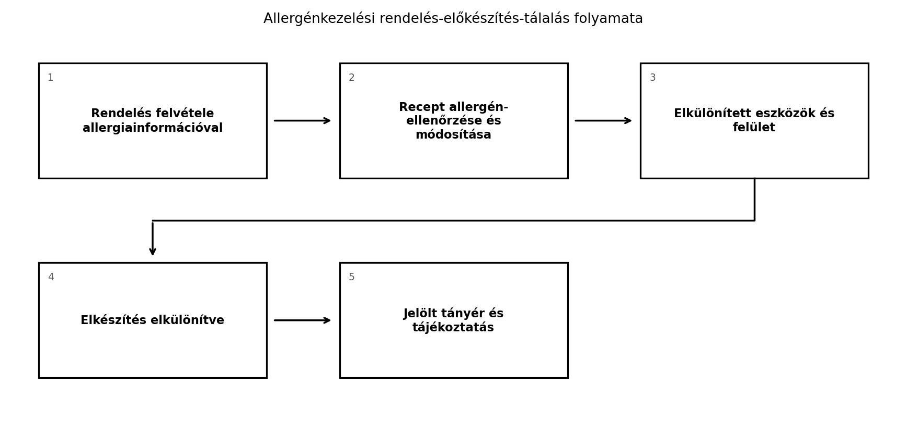

Képzelj el egy tavaszi ebédidőt: a konyhán egyszerre készül a hagyományos gombakrémleves és egy tejmentes zöldségleves. A felszolgáló a melegleves merőkanalat a tejmentes fogásba mártja, közben a konyhai dolgozó ugyanazt a vágódeszkát használja a sajtos szendvicshez és az allergénkímélő zöldségekhez. A vendég allergiás reakcióval a sürgősségin végzi. A hiba nem a leves ízében, hanem a láthatatlan szennyezésben volt.
Mire jó ez a konyhán? Ha ismered a keresztszennyeződés forrásait, és betartod az allergénkezelési eljárást, akkor megelőzöd, hogy a vendéged allergiás reakció miatt kórházba kerüljön. Ez nem csak udvariasság: jogi, higiéniai és szakmai kötelesség.
Definíció. A keresztszennyeződés akkor következik be, amikor egy allergén anyag az egyik élelmiszerből, eszközről, felületről vagy munkatárs kézről átkerül egy olyan ételre, amelyet az adott allergént nem tartalmazó ételként készítünk. A szennyezés lehet közvetlen (például ugyanabba az olajba tesszük a sajtos rántotthúst és a sima zöldséget) vagy közvetett (például az előző műveletből maradt tejszínnyom a merőkanálon).
Allergén. Egy allergén nem feltétlenül látható, szaga sincs. A tej (laktóz) nem csak a tehéntejben van jelen: vaj, tejszín, tejföl, sajt, joghurt, kefir, író, tejsavó, tejpor, kazein, laktóz, tejszármazékok. Rejtett forrás lehet pékáru, sütőzsír, húskészítmények, mártásporok, burgonyapüré-por. A glutén a búzában, rozsban, árpában, zabban (szennyezett zab) van, de rejtve megtalálható szójaszószban, pácokban, felvágottakban, fűszerkeverékekben is. Az összetevők pontos ismerete nélkül a „biztos nincs benne” kijelentés veszélyes.
Szabály. Ebben a könyvben allergénkímélő étel az, amelyet a vendég allergénjének kizárására elkülönítve, ellenőrzött alapanyagokból és eszközökkel készítenek, hogy a kiválasztott allergén se az alapanyagban, se a készítés során, se keresztszennyeződés révén ne kerüljön az ételbe. A kifejezés eljárást jelöl, nem garanciát: az „allergénmentes”, „allergénkímélő” szót a vendég felé nem használjuk. A „biztos mentes” garanciát azonban teljes körű, ellenőrzött laboratóriumi környezetben is nehéz adni, ezért a vendéglátásban az elkülönített eljárást és a pontos tájékoztatást kell gyakorolni, nem a garantálást hangoztatni.
Jogszabály. Az Európai Parlament és a Tanács 1169/2011/EU rendelete a fogyasztók élelmiszerekkel kapcsolatos tájékoztatásáról – különösen a II. melléklet – felsorolja a jelölésköteles allergéneket, és előírja, hogy a vendéglátásban sem előrecsomagolt ételek esetén is elérhetővé kell tenni az allergéninformációt. A hazai részletszabályok a tájékoztatás módját írják elő; a pontos formátum, ikonok és a bejelentési kötelezettség ellenőrizendő: hatályos magyar rendelet és NÉBIH-útmutató.
| Keresztszennyeződés forrása | Példa a konyhán | Megelőzés módja |
|---|---|---|
| Közös olajsütő | Tejmentes receptúrájú zöldség valójában ugyanabban az olajban sül, mint a sajtos rántott hús | Külön sütőolaj; ha nincs, külső bevonat nélküli készítés |
| Vágódeszka, kés, merőkanál | Ugyanazt az eszközt használják allergént nem tartalmazó és allergént tartalmazó ételhez mosás nélkül | Színkódolt eszközök, elkülönített tárolás, azonnali mosás |
| Munkafelület | Tej- vagy tojásmaradék marad a pulton, majd rászórjuk a zöldséget | Elkülönített előkészítő sarok vagy teljes takarítás közben |
| Kéz, kesztyű, kötény | Allergént fogott kézzel fogjuk meg az allergénkímélő köretet | Kézmosás, kesztyűcsere minden váltáskor |
| Pára, lisztpor | Lisztpor leülepedik a levesbetéten, vagy közös sütőben sül a gluténtartalmú és mentes étel | Külön sütési idő vagy alufóliás lefedés, pormentes tárolás |
| Edény, tálalóeszköz | Ugyanazt a tálat használják a krémleveshez és a leveshez | Dedikált edények, lehetőleg szín vagy felirat szerint elkülönítve |
Szabály. Az allergénkezelési munkafolyamat akkor sikeres, ha az allergénnel kapcsolatos információ a vendég rendelésénél belép, és a tányér kiszolgálásakor nem vész el. A folyamat lépéseit (lásd a számozott eljárást) minden munkatársnak követnie kell. Az üzemi részleteket a saját HACCP-terv és a vendéglátó egység allergénkezelési szabályzata határozza meg (ellenőrizendő: üzemi dokumentum).
Az alábbi folyamatábra a legfontosabb lépéseket mutatja:

Eljárás. Az allergénkímélő rendelés előkészítésének és kiszolgálásának lépései:
Összefüggés. Amikor a vendég allergénkímélő ételt kér (allergénmentességet nem ígérünk), a receptet nem elég fejből átalakítani. Az összes összetevőt, sűrítőanyagot, panírt, pácot, köretet és díszítőelemet ellenőrizni kell. A receptúra-változtatásnak ugyanazt a technológiai minőséget kell hoznia, mint az eredeti ételnek, úgy, hogy az allergén kimarad.
Példa. Tej- és gluténmentes rántott zöldség. Az eredeti rántott sajtos gombafej tej- és gluténtartalmú: a gomba lisztbe van forgatva (glutén), tojásba mártva (tojás), zsemlemorzsába bundázva (glutén), vajban vagy olajban sütve (ha előtte rántott sajt sült benne, tej is kerülhet az olajba). Az allergénmentes változatnál a gombát szeletelve, rizsliszttel, felvert tojás nélkül (pl. szójatejjel vagy csicseriborsó-liszttel) és gluténmentes zsemlemorzsával panírozzuk; a sütéshez friss, elkülönített olajat használunk. A panír nem tartalmazhat tejterméket, és a sütés után nem kerülhet közös tálra.
Számítás. Ha a konyhán 12 adag gluténmentes rántott zöldséget készítünk, és egy adaghoz gluténmentes zsemlemorzsa szükséges, akkor a szükséges összes mennyiség: A tanulási példa célja, hogy a helyettesítő anyag beszerzését is kalkuláljuk: ha a gluténmentes zsemlemorzsa -ja , akkor 12 adaghoz ára: Az üzemi beszerzési árak természetesen változnak; a példa mutatja, hogy a helyettesítő anyag költségét is ellenőrizni kell.
Allergén. A dokumentálás során a receptúra-lapra – vagy az ételkalkulációs programba – tüntesse fel a változtatott allergénlistát: az eredeti allergének közül mi maradt el, és milyen helyettesítőt használtak. A helyettesítő anyag lehet maga is allergén (például a szójatej szójaallergént jelent). A vendéget tájékoztatni kell a helyettesítő összetevőkről.
Jogszabály. A vendéglátásban, ahol az ételeket nem előrecsomagolt termékként értékesítik, a 14 allergénre vonatkozó tájékoztatást a vendég számára elérhetővé kell tenni. A hazai gyakorlat szerint ez történhet az étlapon, az ártáblán, külön allergéntájékoztató füzetben, vagy a pultnál elhelyezett táblázatban. A pontos forma ellenőrizendő: hatályos hazai rendelet és NÉBIH-útmutató. A szóbeli tájékoztatás önmagában akkor fogadható el, ha az étlapon vagy a pultnál egy jól látható felirat hívja fel a figyelmet arra, hogy az allergéninformációk szóban kérhetők.
Alkalmazás. Az étlapon a 14 allergént gyakran számokkal vagy betűkóddal jelölik. Például a II. melléklet sorrendje szerint: 1 – glutén, 2 – rákfélék, 3 – tojás, 4 – halak, 5 – földimogyoró, 7 – tej (a számozás üzemenként eltérhet; ellenőrizendő). Piktogram esetén a könyv ábráit használd. A homogén, jól karbantartott jelölés segíti a személyzetet és a vendéget. Ha az étel nem tartalmazza az adott allergént, de a konyhában keresztszennyeződésnek lehet kitéve, erről a vendéget tájékoztatni kell (például: „a konyhában tejet is feldolgozunk, nyomokban előfordulhat”). Az előre csomagolt termékek „nyomokban tartalmazhat” jelölése önkéntes, elővigyázatossági jelölés; a vendéglátásban a keresztszennyeződési kockázatról adott pontos tájékoztatás a lényeg. A megfogalmazást az üzem allergénszabályzata rögzíti (ellenőrizendő: NÉBIH-útmutató). A téves állítás (például „teljesen gluténmentes”, ha közös a sütő vagy a vágódeszka) súlyos felelősség.
Szabály. A vendéget mindig tényszerűen tájékoztasd. Ne ígérj allergénmentességet, ha a feltételeket nem tudod garantálni. Helyes válasz: „Ez az étel a mi eljárásunk szerint nem tartalmaz tejfehérjét; azonban ugyanabban a konyhában tejet is feldolgozunk, így a keresztszennyeződés kockázata nem zárható ki teljesen.” Ilyenkor a vendég dönthet.
Gyakorlat. Ha a vendég súlyos allergiát jelez, és a konyha nem tudja biztosítani az elkülönített környezetet, akkor a felszolgálónak ezt közölnie kell, és lehetőség szerint egyszerű, kevéssé kockázatos ételt ajánlani, vagy elmondani, hogy nem tudjuk kiszolgálni. A vendég élete többet ér, mint egy rosszul sikerült, allergéntartalmú étel.
Cél. Készíts 4 adag glutén-, tej- és tojásmentes grillezett csirkemellet úgy, hogy a keresztszennyeződést a gyakorlatban elkerüld.
Eszközök és anyagok. Külön kosár vagy doboz, a színkódban nem használt (pl. lila) színnel jelölve és feliratozva; tiszta vágódeszka, kés, grillserpenyő, tálaló tányérok, alufólia. Alapanyagok: csirkemellfilé, rizs, vegyes zöldség (brokkoli, sárgarépa, cukkini), olívaolaj, só, bors, friss petrezselyem, citromlé.
Biztonsági korlát. Ezt a műveletet tankonyhán vagy oktatói felügyelettel gyakorold; otthon csak a leírt biztonsági feltételekkel. A nyers csirkehús veszélyes: a maghőmérsékletet a legvastagabb részbe szúrt maghőmérővel ellenőrizd. A grillezésnél forró felülettel dolgozunk.
Higiéniai előkészület. Mosd meg a kezed; tiszta kötény; jelölt allergénkímélő eszközök; fertőtlenített munkafelület.
Számozott lépések. 1. A rizst alaposan öblítsd át, majd -szeres vízben, fedő alatt, takaréklángon főzd puhára. Sózd meg. 2. A zöldségeket tiszta vágódeszkán aprítsd kisebb darabokra, gőz fölött párold roppanósra. 3. A csirkemellet papírtörlővel itasd le, sózd, borsozd, kevés olívaolajjal kend meg. 4. A grillserpenyőt hevítsd fel, a csirkét süsd oldalanként 5–6 percig, amíg a maghőmérséklet eléri a 75 °C-ot (ellenőrizendő: NÉBIH-útmutató / hatályos rendelet / HACCP-terv). 5. A tányért előkészíted: a rizst, a zöldséget, a csirkemellet elkülönített eszközzel helyezd a tányérra. Petrezselyemmel, citromlével ízesítsd. 6. Tálalás előtt ellenőrizd: a tányért semmilyen közös eszköz nem érintette, nincs rajta vaj, tejszín, tojásos öntet.
Ellenőrzési pontok. Látod-e a külön eszközöket? A csirkemell maghőmérséklete megfelelő? A tányéron nincs-e allergéntartalmú díszítőelem?
Dokumentálás. A konyhai jegyen jelöld: „allergénkímélő: glutén, tej, tojás – K. J. készítette – 11:15”.
Az allergénkímélő étel minőségellenőrzése kétoldalú:
A mérhető ellenőrzés a maghőmérséklet és a dokumentált jelölés; az érzékszervi ellenőrzés a tányér összeállítása és a címke ellenőrzése.
Hiba 1. Ugyanazt a sütőolajat használjuk az allergénkímélő és a normál fogáshoz. Ok: kényelmesebb, mint külön olajat kezelni. Következmény: az allergén az olajban feloldódik vagy részecske formájában rákerül az ételre. Helyes gyakorlat: külön sütőedény, külön olaj, vagy ha nincs, kerüld az olajban sütést az allergénkímélő fogásnál.
Hiba 2. A gluténmentes ételhez kapcsolódóan nem ellenőrizzük a szójaszószt, a pácport vagy a fűszerkeveréket. Ok: a termékek csomagolásán nem olvassuk el az összetevőket. Következmény: a glutén rejtve bekerül. Helyes gyakorlat: minden összetevő címkéjét ellenőrizni; ha kétséges, ki kell cserélni.
Hiba 3. A felszolgáló a vendégnek azt mondja: „természetesen mentes minden allergéntől”. Ok: a felszolgáló nem kérdezte meg a konyhát, vagy a konyha nem dokumentálta a feltételeket. Következmény: hamis biztonságérzet, esetleg súlyos allergiás roham. Helyes gyakorlat: a pontos, feltételekkel együtt adott tájékoztatás.
Egy belvárosi étteremben gluténmentes ételt kért egy cöliákiás vendég. A konyha kicserélte a lisztet gluténmentes lisztre, a zsemlemorzsát is, de a barna mártáshoz használt étkezési keményítő helyett a szakács egy por alapú, bolti mártásalapot tett, ami búzalisztet tartalmazott. A vendég néhány falat után rosszul lett. Az étterem kártérítési eljárással szembesült. A hibát az okozta, hogy a receptúra-változtatás során nem ellenőrizték a kiegészítő anyagokat, és a dokumentációban nem tüntették fel a mártásalapot. Tanulság: az allergénkezelés nem csak a fő összetevőkre vonatkozik, hanem minden egyes hozzávalóra.
A válaszok a Megoldások részben találhatók.
1. feladat (A). Fogalmazd meg három lépésben, mit teszel, amikor a felszolgáló közli, hogy a 4-es asztalnál tejallergiás vendég ül, és rántott sajtot szeretne, de nem fogyaszthat tejet.
2. feladat (A). Sorolj fel öt rejtett tejforrást, amelyeket a konyhán ellenőrizni kell.
3. feladat (B). Készíts a 4. asztal számára egy allergénkímélő fogást: írd le a receptúra-módosítás lépéseit a rántott sajtból kiindulva, és jelöld meg, melyik allergén marad a tányérban, melyik került ki.
4. feladat (B). Számold ki, hány gramm gluténmentes zsemlemorzsát kell vételezni, ha 8 adag gluténmentes rántott gombát készítünk, és egy adaghoz szükséges. Mennyi a költség, ha a gluténmentes zsemlemorzsa ?
5. feladat (C). Tervezz meg egy heti forgatókönyvet: hogyan szerveznéd meg a konyhát, ha minden nap várhatóan 2-3 gluténmentes vendég van, de nincs külön gluténmentes konyha? Írd le az eszközök, sorrend és takarítás rendjét.
6. feladat (D). A gyakorlati útmutatóban leírt allergénkímélő grillezett csirkemellet valaki úgy készítette el, hogy a rizst ugyanabban a lábasban főzte, amelyben előtte tejberizs készült, és a zöldséget ugyanazzal a késsel vágta, amelyikkel előtte sajtot szeletelt. Mi a hiba? Milyen lépéseket kellett volna tenni? Készíts hibaelemző táblázatot: tünet – lehetséges ok – ellenőrzés – helyes gyakorlat.
1. feladat (A). 1) Vedd fel a rendelést pontosan: tejallergiát jelez, szeretné a rántott sajtot de tejmentesen. 2) Ellenőrizd a receptúrát: a rántott sajt tejfehérjét, glutént, tojást tartalmaz; a tejmentes változathoz a sajtot el kell hagyni vagy címke-ellenőrzött tejmentes helyettesítővel készíteni, a panírhoz tej nélküli (pl. vízzel vagy tejmentes itallal készült) bundát használni; a glutén és a tojás a vendég jelzése nélkül nem tiltott, a tányéron marad, és erről tájékoztatjuk. 3) Készítsd el az ételt elkülönített eszközökkel, külön olajban; jelöld a tányért, és tájékoztasd a vendéget a fennmaradó allergénekről.
2. feladat (A). Tej, tejszín, tejföl, vaj, sajt, joghurt, kefir, író, tejsavó, tejpor, kazein, laktóz, tejszármazékok; továbbá rejtett forrásként szerepelhet pékáru, sütőzsír, húskészítmény, mártáspor, burgonyapüré-por. (Bármely öt helyes.)
3. feladat (B). Receptúra-módosítás rántott sajt tejallergiás vendégre: - A sajt helyett használjon nagyobb zöldségszeleteket (pl. padlizsán, cukkini), amelyek nem tartalmaznak tejet. - A bunda tej nélkül készüljön (liszt, tojás, morzsa, a tejmentességet a címkén ellenőrizve); csak a tejforrásokat cseréljük, ezért a glutén és a tojás nem kerül ki. - A sütéshez friss, külön sütőolaj. - Az eredmény: tejmentes receptúrájú, elkülönítve készített étel. A tányéron marad: glutén (liszt, morzsa) és tojás (bunda) – erről a vendéget tájékoztatjuk; kikerült: tej. A helyettesítőktől függően új allergén (pl. szója) is bekerülhet, ezért a címkét ellenőrizzük. - A tányérra kerülhet még friss citrom, petrezselyem.
4. feladat (B). Adott: adagszám ; adagonkénti szükséglet . Keresett: összes mennyiség .
Képlet: . Behelyettesítve: Költség: ára . A ára: Ellenőrzés: gramm, ami kevesebb, mint fél kiló, így az ár kisebb, mint : a kapott reális.
5. feladat (C). Heti szervezési terv gluténmentes vendégekhez külön konyha nélkül: - Naponta ellenőrizni a gluténmentes alapanyagok készletét (liszt, zsemlemorzsa, tészta, szójaszósz-mentes pác). - A gluténmentes fogást a nap első műveletében készíteni, tiszta konyhán. - Külön, színkódolt eszközök (a színkódban nem használt, pl. lila tárolódoboz és vágódeszka, kés, kanalak; a piros a nyers húsé) kijelölése; minden használat után azonnali mosogatás. - A munkaterület fertőtlenítése az allergénkímélő előkészítés előtt. - A sütőben külön tálcán, alufóliával letakarva sütni a gluténmentes ételt. - A tálalásnál jelölt tányér és a felszolgáló tájékoztatása. - A napi dokumentáció vezetése: melyik asztalnál, milyen allergén, mikor készült.
6. feladat (D). Hibaelemző táblázat:
| Tünet | Lehetséges ok | Ellenőrzés | Helyes gyakorlat |
|---|---|---|---|
| A rizs tejjel szennyezett lehet | A lábasban előtte tejberizs készült, és mosogatás után maradt tejnyom | Ellenőrizni a lábas tisztaságát, szükség esetén forró vizes mosás, fertőtlenítés | Allergénkímélő ételhez mindig dedikált vagy azonnal fertőtlenített edényt használni |
| A zöldség sajttal szennyezett lehet | Ugyanazt a kést használták sajthoz, mint a zöldséghez | Látni vagy mosogatás hiánya; a kés élelmiszer-maradékot hordozhat | Allergénkímélő zöldséget külön késsel vágni, vagy a kést alaposan elmosni, fertőtleníteni |
A hiba az, hogy nem tartották be az elkülönített eszközhasználatot. A gyakorlati útmutató szerint külön vágódeszkát, kést és lábast kellett volna használni, vagy közvetlenül használat előtt tökéletesen elmosogatva.
Az allergénkímélő konyhai munka alapja a keresztszennyeződés megelőzése. Ennek fő forrásai a közös olaj, az eszközök, a felületek, a kéz és a felverődő por. A biztonságos eljárás a rendelés felvételétől a tálalásig tart: a felszolgáló pontosan kérdez, a konyha felelőst jelöl ki, az alapanyagok címkéjét ellenőrzi, az ételt elkülönített eszközökkel, lehetőleg első műveletként készíti, és a tányért jelöli. A receptúra-változtatás során minden összetevőt újra kell ellenőrizni, nem elég a fő allergént kicserélni. A vendéget írásban és szóban is tájékoztatni kell; nem szabad „allergénmentes” garanciát ígérni, ha a feltételek nem biztosítottak. Továbbvitt eredmény. Az allergénkímélő rendelés-előkészítés-tálalás folyamatot használjuk az Élelmiszerjelölés és címkeolvasás alfejezetben a címkeinformációk értelmezésére, valamint a Gluténmentes, laktózmentes és allergiás étrendek alfejezetben a speciális étrendek összeállításánál. A pontos allergéntájékoztatás minden diétás étkezésnél nélkülözhetetlen.
Forrástípusok: 1169/2011/EU rendelet II. melléklet; NÉBIH útmutatók a vendéglátó allergéntájékoztatásáról; a vendéglátó üzlet saját HACCP-terve és allergénkezelési szabályzata; gyártói termék-adatlapok.
Ellenőrizendő pontok: a hazai allergéntájékoztatás pontos módja és formai előírásai; a „nyomokban tartalmazhat” megjegyzés alkalmazási feltételei; az allergénkímélő fogások dokumentációs kötelezettségei; a gyakorlati példában szereplő maghőmérséklet és a gluténmentes zsemlemorzsa ára tanulási adat, az üzemi értékek eltérhetnek. A felsorolt rejtett allergénforrások gyakoriak, de minden gyártói terméknél a címkét egyedileg kell ellenőrizni.